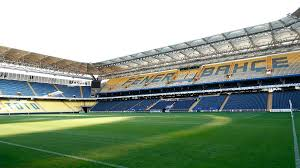

HAKKIMDA
Merhaba,Öncelikle adım Behiç,soyadım Balkaya.23 yaşındayım.Doğup büyüdüğüm şehir olan Sakarya şehrinin Sapanca ilçesinde ailem ile birlikte yaşıyorum
Ailemin en büyük çocuğuyum.Benimle beraber 2 kız kardeşim var.Öğrencilik hayatım mahallemizin ilkokulu olan GAZİPAŞA İLKÖĞRETİM okulunda başladım.
Ortaokulu Sakaryanın Serivan ilçesinde özel bir okulda okuduktan sonra liseyi sakaryanın önde gelen liselerinden biri olan Sakarya Anadolu Lisesinde okudum.
Liseden sonra bana uygun olan bölümü bulmakta zorlandığımdan dolayı 3 yılda 3 adet bölüm değiştirip sonunda Sakarya Üniversitesi Bilgisayar Mühenisliğine geçiş yapıp,üniversite hayatıma 2023/2024 dönemimde başlamış oldı.
Son olarak size ilgi alanlarımdan bahsetmek isterim.Ben okumayı ve yazmayı seven biriyim bununla birlikte çoğu türk erkeği gibi futbola ve arabalara olan ilgimede değinmeden geçemem.
Hakkımda daha fazla bilgiye web sayfamı inceleyerek ulaşabilirsiniz.
